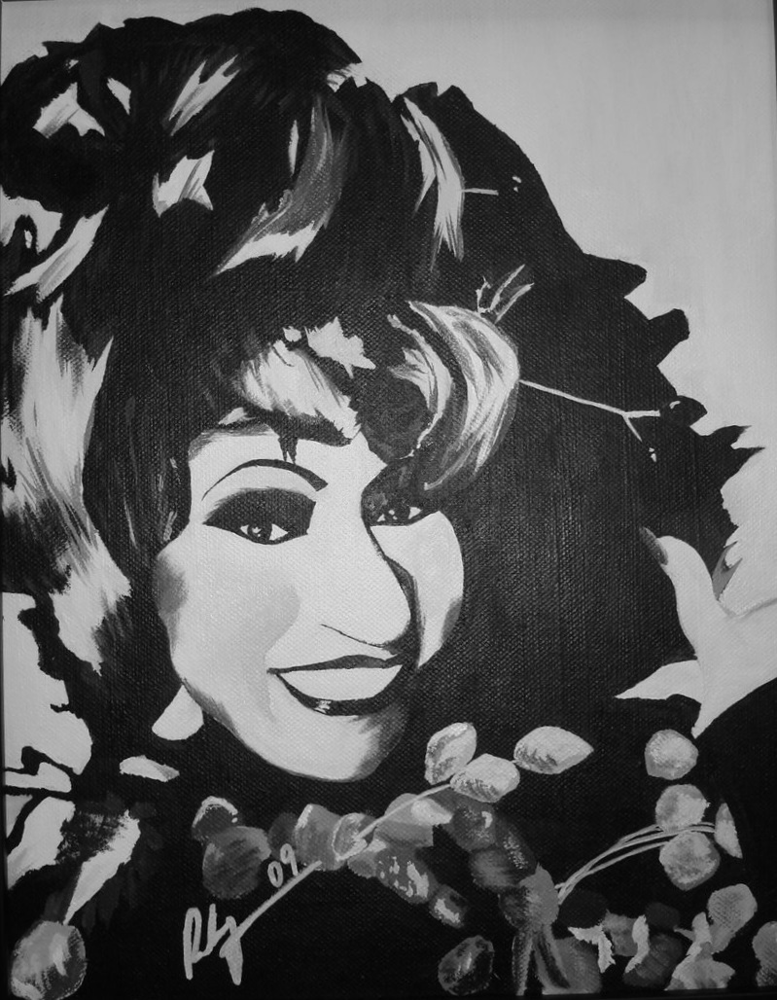

Celia Cruz

I Enjoy Life as a Developer
- I am Celia Cruz, a Cuban singer of Latin music.
- I was born on October 21, 1925 in Santos Suárez in Havana, Cuba.
- I am the second of four children.
- My father, Simon Cruz, was a railroad stoker.
- My mother, Catalina Alfonso was a homemaker who took care of an extended family.
- I am known for electrifying my audiences with my wide-ranging, soulful voice.